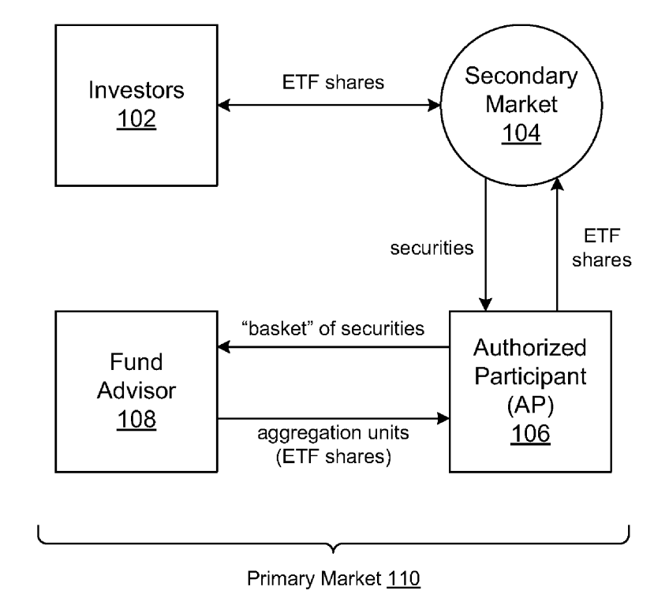
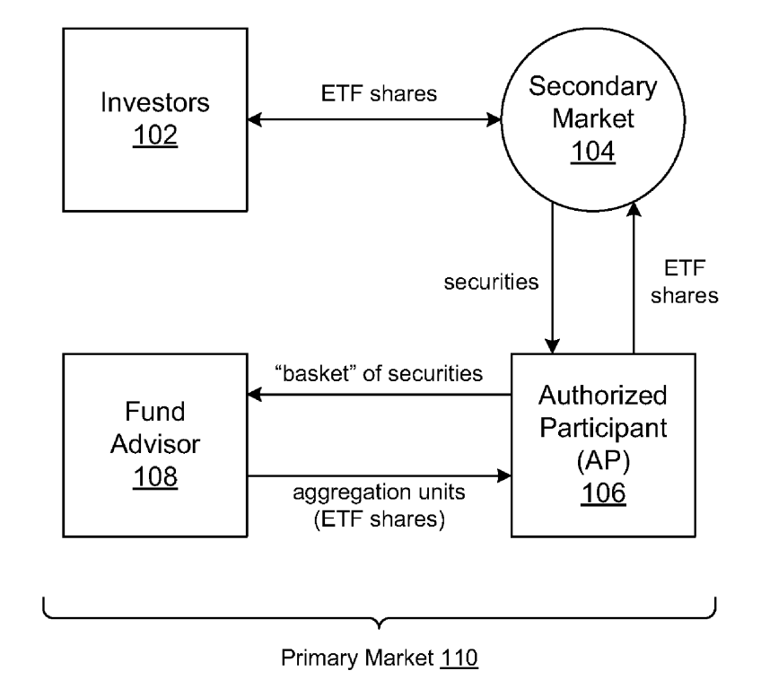
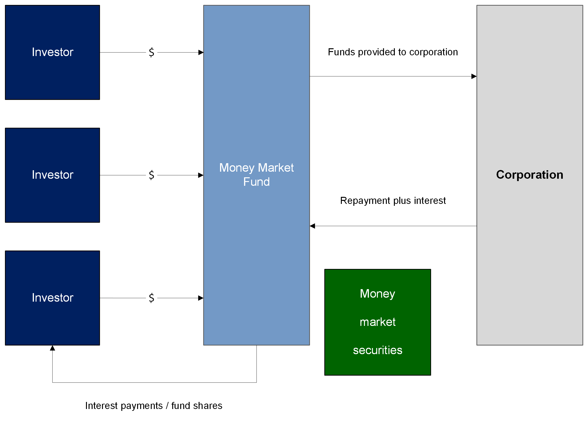
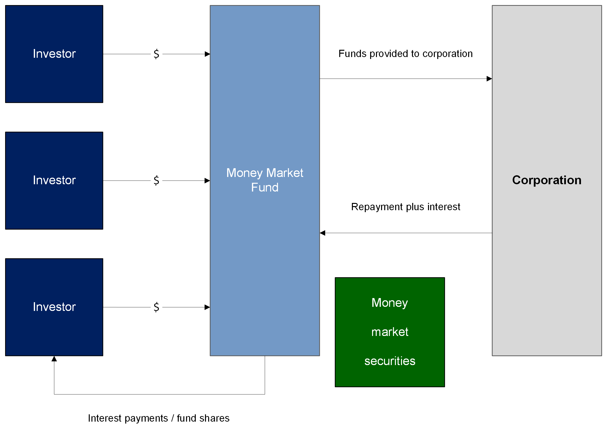
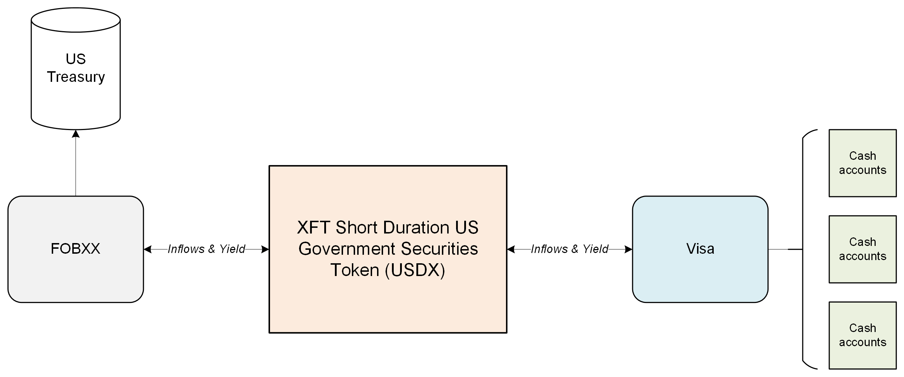
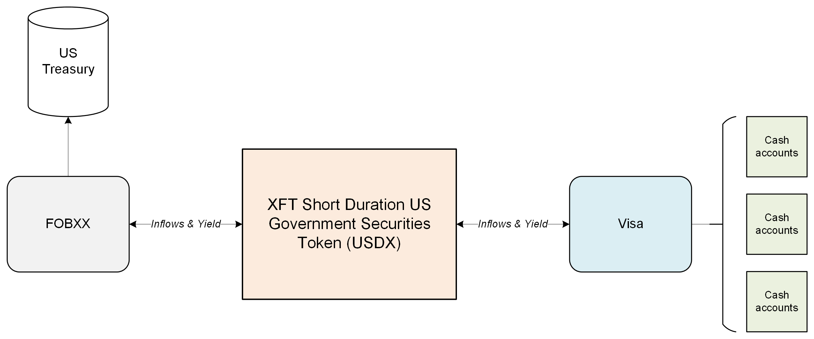
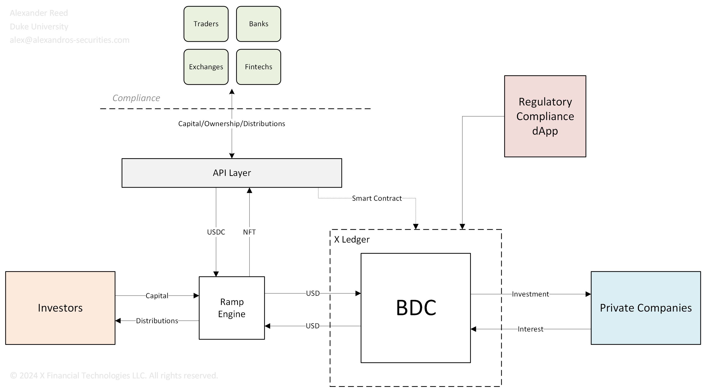
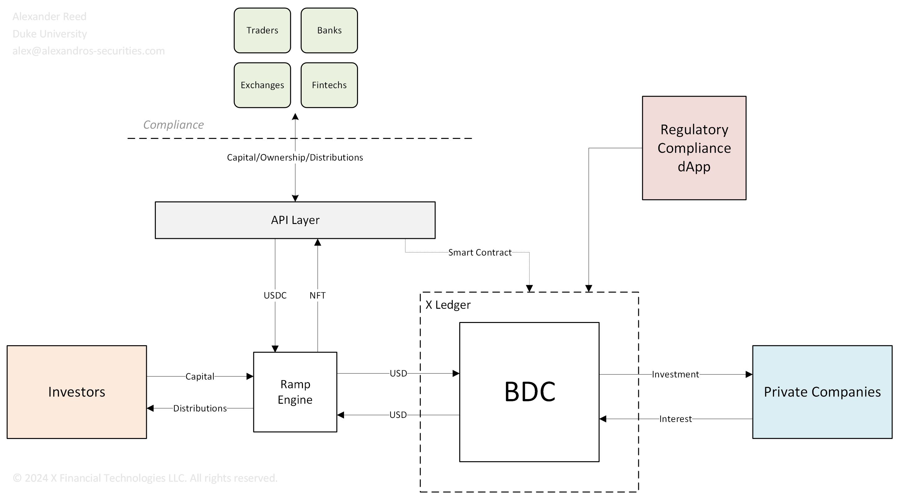

 



 


 



Flows

- 1. The Ledger-Based Securities for the Products are pre-created (but not activated) by the Tokenizer for each specific Product and transferred into a wallet held by the Tokenizer on behalf of the Issuer.
- 2. Investor submits a purchase order to the Issuer.
-
3. The Investor has to go through KYC procedures in accordance with applicable legal and regulatory requirements and acknowledge required regulatory warnings. The Issuer, acting in its sole discretion, has the right to reject any issuance request if there are negative findings or other material issues with the issuance.
- Where an Authorized Participant is involved, the Authorized Participant will apply its own KYC procedures in relation to any person wishing to purchase the Products from it in accordance with its own legal and regulatory requirements.
- 4. The Issuer submits a creation order to the Tokenizer upon receipt of either the Authorized Participant’s payment or the Investor’s payment (including Investor Fees) or respective guarantee or equivalent security on the Paying Account.
-
5. Upon the Business Day following the receipt of the Authorized Participant’s payment or the Investor’s payment (including Investor Fees) or respective guarantee or equivalent security (i.e. T+2), the Issuer:
- a. buys the number of Underlyings equivalent to the “Investor’s or Authorized Participant’s payment amount minus Investor Fees” (fractional Underlyings are possible) and transfers the Underlying to the Collateral Account with the Custodian (or as directed by the Authorized Participant, as applicable);
- b. in case of successful purchase of the Underlying, instructs the Tokenizer to activate the pre-created Ledger-Based Securities in the amount equivalent to the purchased Underlyings and to transfer them until the latest 6:00pm CEST to the wallet specified by the Investor (or the Authorized Participant’s wallet, as applicable);
- c. in case of being unable to purchase the Underlying within the specified timeframe, cancels the purchase order and transfers back the purchase price minus a fixed fee covering the expenses of the Issuer (such as KYC) to the Investor or the Authorized Participant, as applicable.
- 6. There are no creation limits on the Products assuming sufficient liquidity in the capital markets in which the Underlying is purchased.
- Creation/Redemption Unit: A large block of ETF shares, usually 50,000 shares
- Primary Market: The part of the market that deals with the issuance of new securities
- Secondary Market: The part of the market where investors purchase securities/ETFs from other investors
Supply & Demand
- Step 1: When new ETF shares need to be created (demand outweighs supply), market makers go through an Authorized Participant (AP) to initiate the transaction.
- Step 2: The AP compiles the necessary securities or cash for delivery to the ETF issuer.
- Step 3: Upon receiving the securities and cash, the ETF issuer issues new shares of the ETF to the AP.
- Step 4: The AP passes the newly issued ETF shares to the market maker to replenish inventory.
- The process works in reverse for redemptions when supply exceeds demand.
- REASONS TO CREATE: Fill orders / Create inventory / Take advantage of arbitrage opportunities
Initiation
- 1. Deliver a “creation basket,” a pre-specified bundle of securities representing the underlying index, to the ETF issuer.
- 2. Provide cash equal to the full or partial value of the creation basket (including actual trading costs of purchasing the creation basket) to the ETF issuer.
- 3. Provide cash equal to the value of the ETF shares plus a trading spread (a buy/sell spread) to the issuer.
Process
- Step 1: The Investor places an order to buy ETF shares on the secondary market:
- If there are enough shares in the market, the order is filled.
- If there are not enough shares, the creation process is initiated in the primary market.
- Step 2: The AP acquires the securities that make up the ETF and delivers them to the ETF sponsor.
- Step 3: The ETF sponsor creates the ETF shares and delivers them back to the AP as a creation unit.
- Step 4: The AP delivers the creation unit/ETF shares to the secondary market.
Example
- 1. John goes to his broker and gives him the order to buy 500,000 shares of an ETF.
- 2. The broker sells the ETF shares to John at a specific price. The process is seamless for John, and his work is done.
- 3. Behind the scenes, the broker, as an authorized participant, determines that new ETF shares must be created due to John's increased demand. The broker is now short the ETF shares.
- 4. The broker buys the basket of securities held by the ETF to hedge himself, becoming long the basket and short the ETF.
- 5. The broker delivers the basket of securities to the ETF issuer, initiating a creation.
- 6. The broker receives new ETF shares from the issuer in return and flattens out his short ETF position.
NAV-based order process and creation of ETF shares
- 1. Investor places NAV-based order with AP
- 2. AP buys basket in the market
- 3. AP transfers basket to ETF for in-kind creation
- 4. ETF performs NAV fixing
- 5. AP provides cash to ETF for cash creation
- 6. ETF performs NAV fixing
- 7. ETF issues shares at NAV to AP
- 8. AP forwards ETF shares at NAV to Investor
- REASONS TO REDEEM: Fill orders / Reduce inventory / Take advantage of arbitrage opportunities
Process
- Step 1: The Investor decides to sell their ETF shares on the secondary market:
- If there is market demand, the shares are sold on the market.
- If there is low demand, the AP gathers enough shares to create a redemption unit.
- Step 2: The AP assembles a redemption unit and delivers it to the ETF sponsor in the primary market.
- Step 3: The ETF sponsor redeems the ETF shares for the underlying securities and delivers them to the AP.
- Step 4: The AP can sell the individual securities in the secondary market for cash.
Example
- 1. John goes to his broker and gives him the order to sell 500,000 shares of the ETF.
- 2. The broker buys the ETF shares from John at an agreed-upon price.
- 3. The broker determines if a redemption is necessary due to the decrease in demand and is now long the ETF since John sold the shares back to him.
- 4. The broker sells the basket of securities held by the ETF to hedge his position, becoming short the basket and long the ETF.
- 5. The broker delivers the ETF shares to the ETF issuer, initiating a redemption.
- 6. The broker receives the basket of securities from the issuer and flattens out the short basket position.
- Arbitrage APs can create or redeem ETF shares to capitalize on arbitrage opportunities in the market. For example, if shares of ETF XYZ are trading at $55.00 in the secondary market while the value of the underlying securities is $54.95 per share, there is an inherent arbitrage opportunity. To realize this, the AP would sell ETF shares at $55 and hedge by buying the corresponding underlying basket of securities for $54.95, locking in a $0.05 profit. The AP can then deliver the underlying securities to the fund sponsor in exchange for ETF shares to flatten their short position in the ETF. This process results in a $0.05 profit for the AP. The key takeaway for investors is that this mechanism helps keep the ETF market price aligned with the value of its underlying securities due to the consistent arbitrage opportunities available to APs and institutional trading desks.
ETF Premium:
- 1. Buy underlying securities for USD $99.
- 2. Create ETF shares by delivering the securities to the issuer.
- 3. Sell ETF shares for USD $100.
ETF Discount:
- 1. Buy ETF shares for USD $99.
- 2. Redeem ETF shares by delivering them to the issuer.
- 3. Sell underlying securities for USD $100.
Trading System
RFQ
- 1. Get a quote
- 2. Return a quote
- 3. Execute quote
- 4. Trade confirmation
Execution Strategies
- SOR
- Flexible smart order router that accesses liquidity with a time-on-target routing strategy by optimally reaching market centers at the same time.
- DARK
- Intelligently accesses dark, grey, and hidden liquidity across a wide spectrum of venues and order types. Strategy also optimizes the use of conditional and exchange order types (e.g. Nasdaq MELO and IEX D-Peg)
- POV
- Schedule-based algorithm that targets the user specified percentage-of-volume benchmark. Prioritizes achieving POV, while optimizing real time events along with forecasting trajectories for execution quality and impact.
Token redemption

| Flow | Steps |
|---|---|
| Token Creation (Price > NAV) |
1. AP identifies arbitrage opportunity 2. AP calculates required assets/cash based on current NAV 3. AP transfers assets/cash to issuer 4. Issuer verifies received assets/cash 5. Issuer mints corresponding number of tokens 6. Issuer transfers tokens to AP's wallet 7. AP lists tokens for sale on the market 8. AP executes sales to capture arbitrage profit |
| Token Redemption (Price < NAV) |
1. AP identifies arbitrage opportunity 2. AP purchases tokens from the market 3. AP initiates redemption request with issuer 4. Issuer verifies token ownership and validity 5. Issuer calculates NAV for redemption 6. Issuer burns redeemed tokens 7. Issuer transfers corresponding assets/cash to AP 8. AP receives assets/cash, realizing arbitrage profit |
| Asset Transfer | 1. Transferring party initiates transfer request 2. System verifies transferring party's balance/ownership 3. System calculates transfer amount based on current NAV 4. Transferring party confirms transfer 5. System executes transfer 6. Receiving party confirms receipt 7. System updates balances and records |
| Token Minting | 1. System detects conditions for minting (NAV increase or share conversion) 2. Calculate number of tokens to mint 3. Verify backing assets are available 4. Execute minting process 5. Assign newly minted tokens to appropriate wallets 6. Update total supply records 7. Notify relevant parties of minting event |
| Token Burning | 1. Redemption request triggers burn process 2. System verifies tokens to be burned 3. Calculate impact on total supply and NAV 4. Execute token burn 5. Update total supply records 6. Adjust backing assets accordingly 7. Notify relevant parties of burn event |
| Dividend Distribution | 1. System detects eligibility for dividend distribution. 2. Calculate dividend amount based on NAV and token holdings. 3. Verify available assets/cash for distribution. 4. Execute dividend payout process. 5. Transfer dividends to token holders' wallets. 6. Update records for token holder distributions. 7. Notify relevant parties of dividend event. |
| Distribution Swap | 1. Fund Manager deposits USD for distribution 2. XFT converts USD to USDC 3. USDC is transferred to the Fund Account 4. Distribution Smart Contract distributes USDC to token holders based on shares 5. Distribution is logged and confirmed |
| User Registration | 1. User submits registration request with required information 2. System performs KYC/AML checks 3. Create user profile in system 4. Generate wallet address for user 5. Associate wallet address with user profile 6. Return user ID and wallet address to user 7. Provide user with access to trading platform |
| Buy Order | 1. Client sends buy order request via API 2. XFT processes: creates order, locks client funds 3. XFT sends order creation confirmation to client 4. XFT lists order in order book 5. When match found, XFT executes part or all of the order 6. XFT updates token balances and cash balances 7. XFT sends execution and balance update notifications to client 8. If partially filled, steps 5-7 repeat until order is fully executed or cancelled 9. XFT sends final order filled notification to client |
| Sell Order | 1. Client sends sell order request via API 2. XFT processes: creates order, locks client tokens 3. XFT sends order creation confirmation to client 4. XFT lists order in order book 5. When match found, XFT executes part or all of the order 6. XFT updates token balances and cash balances 7. XFT sends execution and balance update notifications to client 8. If partially filled, steps 5-7 repeat until order is fully executed or cancelled 9. XFT sends final order filled notification to client |
| NAV Oracle | 1. Gather current market values of all fund assets 2. Calculate total liabilities 3. Subtract liabilities from assets 4. Divide by total number of tokens 5. Update NAV in the system 6. Trigger any necessary actions based on NAV change (token minting/burning) |
| NAV Token | 1. Fund sources send real-time data feeds 2. Blockchain platform collects, validates, and stores data 3. NAV engine accesses data from the blockchain 4. Calculate total liabilities 5. Compute NAV 6. Record NAV on the blockchain 7. Smart contract monitors NAV on the blockchain 8. Smart contract updates token value 9. Trigger necessary actions based on NAV change (token minting/burning) 10. Broadcast updated token value to market participants |
CEF Tokens
| Scenario | Action | Steps | Arbitrage |
|---|---|---|---|
| Price > NAV | Create | 1. AP identifies arbitrage opportunity 2. AP calculates required assets/cash based on current NAV 3. AP transfers assets/cash to issuer 4. Issuer verifies received assets/cash 5. Issuer mints corresponding number of tokens 6. Issuer transfers tokens to AP's wallet 7. AP lists tokens for sale on the market 8. AP executes sales to capture arbitrage profit |
Premium |
| Price < NAV | Redeem | 1. AP identifies arbitrage opportunity 2. AP purchases tokens from the market 3. AP initiates redemption request with issuer 4. Issuer verifies token ownership and validity 5. Issuer calculates NAV for redemption 6. Issuer burns redeemed tokens 7. Issuer transfers corresponding assets/cash to AP 8. AP receives assets/cash, realizing arbitrage profit |
Discount |
- Market Price < NAV: Buy shares, convert to tokens at NAV, sell tokens or redeem for NAV.
- Market Price > NAV: Mint tokens at NAV, buy shares at NAV, sell shares at a premium, or sell tokens at a higher market price.
Click here to see more flows.
Technical Specifications
- MEMO SBE
- FIX Drop
- MEMOIR Depth Feed
- MEMOIR Top of Book Feed
- MEMOIR Last Sale Feed
- MEMX-TCP
- MEMX-UDP
- SBE Schemas
- xNET Connectivity Specification
Engineering
- Trading system design
- Payments system design
- Crypto payments system design
- Trading system requirements
- Microservices
- Hardware accelerated HFT system
- Regtech architecture design
- Payments SCMP API design
- Payments simple order API design
- API Repo
{kind=link}
Developer
- Linux
- Quorum blockchain
- API interface
- Rust, C++, Java
- Zero-knowledge proofs
- Geoledgers
- Regulatory oracles
Nodes
- Central banks
- Regulatory bodies
- Stock exchanges
- Issuers
- Custodians
- Proof of compliance
- Proof of authority
- Proof of reserves
- Proof of title
Contract Logic
- KYA (Know-Your-Asset)